Home
Liturgy
Roman Missal
Proper of Time
PALM SUNDAY OF THE PASSION OF THE LORD
|
1. |
On this day the Church recalls the entrance of Christ the Lord into Jerusalem to accomplish his Paschal Mystery. Accordingly, the memorial of this entrance of the Lord takes place at all Masses, by means of the Procession or the Solemn Entrance before the principal Mass or the Simple Entrance before other Masses. The Solemn Entrance, but not the Procession, may be repeated before other Masses that are usually celebrated with a large gathering of people. |
| It is desirable that, where neither the Procession nor the Solemn Entrance can take place, there be a sacred celebration of the Word of God on the messianic entrance and on the Passion of the Lord, either on Saturday evening or on Sunday at a convenient time. |
THE COMMEMORATION OF THE LORD'S ENTRANCE INTO JERUSALEM
First Form: The Procession
| 2. | At an appropriate hour, a gathering takes place at a smaller church or other suitable place other than inside the church to which the procession will go. The faithful hold branches in their hands. |
| 3. | Wearing the red sacred vestments as for Mass, the Priest and the Deacon, accompanied by other ministers, approach the place where the people are gathered. Instead of the chasuble, the Priest may wear a cope, which he leaves aside when the procession is over, and puts on a chasuble. |
| 4. | Meanwhile, the following antiphon or another appropriate chant is sung. |
Ant.Mt 21:9
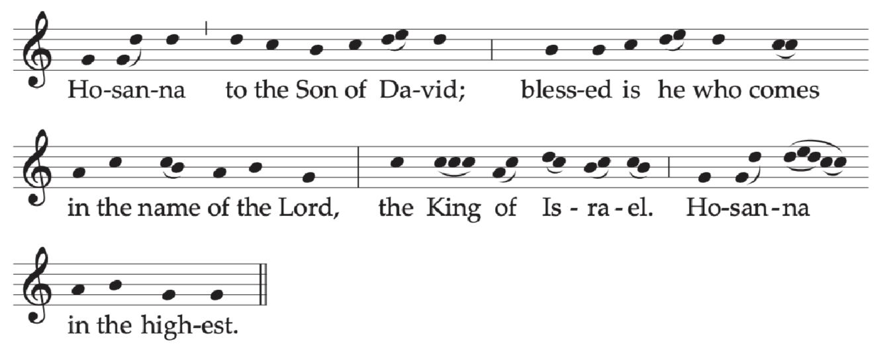
Or:
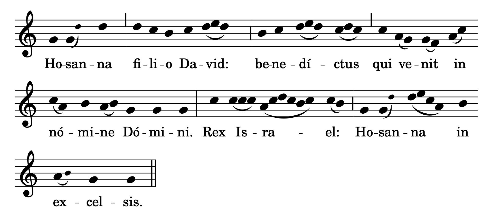
| 5. | After this, the Priest and people sign themselves, while the Priest says: In the name of the Father, and of the Son, and of the Holy Spirit. Then he greets the people in the usual way. A brief address is given, in which the faithful are invited to participate actively and consciously in the celebration of the day, in these or similar words: |
Dear brethren (brothers and sisters),
since the beginning of Lent until now
we have prepared our hearts by penance and charitable works.
Today we gather together to herald with the whole Church
the beginning of the celebration
of our Lord's Paschal Mystery,
that is to say, of his Passion and Resurrection.
For it was to accomplish this mystery
that he entered his own city of Jerusalem.
Therefore, with all faith and devotion,
let us commemorate
the Lord's entry into the city for our salvation,
following in his footsteps,
so that, being made by his grace partakers of the Cross,
we may have a share also in his Resurrection and in his life.
| 6. | After the address, the Priest says one of the following prayers with hands extended. |
Let us pray.
Almighty ever-living God,
sanctify ✠ these branches with your blessing,
that we, who follow Christ the King in exultation,
may reach the eternal Jerusalem through him.
Who lives and reigns for ever and ever.
R. Amen.
Or:
Increase the faith of those who place their hope in you, O God,
and graciously hear the prayers of those who call on you,
that we, who today hold high these branches
to hail Christ in his triumph,
may bear fruit for you by good works accomplished in him.
Who lices and reigns for ever and ever.
R. Amen.
| He sprinkles the branches with holy water without saying anything. | |
| 7. | Then a Deacon or, if there is no Deacon, a Priest, proclaims in the usual way the Gospel concerning the Lord's entrance according to one of the four Gospels. If appropriate, incense may be used. |
"Blessed is he who comes in the name of the Lord"
✠ A reading from the holy Gospel according to Matthew.21:1-11
1 When Jesus and the disciples drew near Jerusalem and came to Bethpage on the Mount of Olives, Jesus sent two disciples, 2 saying to them,
"Go into the village opposite you,
and immediately you will find an ass tethered,
and a colt with her.
Untie them and bring them here to me.
3 And if anyone should say anything to you, reply,
'The master has need of them.' Then he will send them at once."
4 This happened so that what had been spoken through the prophet
might be fulfilled:
5 Say to daughter Zion,
"Behold, your king comes to you, meek and riding on an ass,
and on a colt, the foal of a beast of burden."
6 The disciples went and did as Jesus had ordered them.
7 They brought the ass and the colt and laid their cloaks over them, and he sat upon them.
8 The very large crowd spread their cloaks on the road,
while others cut branches from the trees and strewed them on the road.
9 The crowds preceding him and those following
kept crying out and saying:
"Hosanna to the Son of David;
blessed is he who comes in the name of the Lord;
hosanna in the highest."
10 And when he entered Jerusalem
the whole city was shaken and asked, "Who is this?"
11 And the crowds replied,
"This is Jesus the prophet, from Nazareth in Galilee."
The Gospel of the Lord.
Next✠ A reading from the holy Gospel according to Mark.11:1-10
1 When Jesus and the disciples drew near to Jerusalem, to Bethphage and Bethany at the Mount of Olives,
he sent two of his disciples 2 and said to them,
"Go into the village opposite you, and immediately on entering it,
you will find a colt tethered on which no one has ever sat.
Untie it and bring it here.
3 If anyone should say to you,
'Why are you doing this?' reply,
'The Master has need of it
and they will send it back here at once.'"
4 So they went off
and found a colt tethered at a gate outside on the street, and they untied it.
5 Some of the bystanders said to them,
"What are you doing, untying the colt?"
6 They answered them just as Jesus had told them to, and they permitted them to do it.
7 So they brought the colt to Jesus and put their cloaks over it.
And he sat on it.
8 Many people spread their cloaks on the road, and others spread leafy branches
that they had cut from the fields.
9 Those preceding him as well as those following kept crying out: "Hosanna!
Blessed is he who comes in the name of the Lord!
10 Blessed is the kingdom of our father David that is to come!
Hosanna in the highest!"
The Gospel of the Lord.
Or:
✠ A reading from the holy Gospel according to John.12: 12-16
12 When the great crowd that had come to the feast heard that Jesus was coming to Jerusalem,
13 They took palm branches and went out to meet him, and cried out:
"Hosanna!
Blessed is he who comes in the name of the Lord, the king of Israel."
14 Jesus found an ass and sat upon it, as is written:
15 Fear no more, O daughter Zion;
see, your king comes, seated upon an ass's colt.
16 His disciples did not understand this at first, but when Jesus had been glorified
they remembered that these things were written about him and that they had done this for him.
The Gospel of the Lord.
Next✠ A reading from the holy Gospel according to Luke.19: 28-40
28 Jesus proceeded on his journey up to Jerusalem.
29 As he drew near to Bethphage and Bethany at the place called the Mount of Olives,
he sent two of his disciples.
30 He said, "Go into the village opposite you,
and as you enter it you will find a colt tethered on which no one has ever sat.
Untie it and bring it here.
31 And if anyone should ask you,
'Why are you untying it?' you will answer,
'The Master has need of it.'"
32 So those who had been sent went off
and found everything just as he had told them.
33 And as they were untying the colt, its owners said to them, "Why are you untying this colt?"
34 They answered,
"The Master has need of it."
35 So they brought it to Jesus,
threw their cloaks over the colt,
and helped Jesus to mount.
36 As he rode along,
the people were spreading their cloaks on the road;
37 and now as he was approaching the slope of the Mount of Olives, the whole multitude of his disciples
began to praise God aloud with joy
for all the mighty deeds they had seen.
38 They proclaimed:
"Blessed is the king who comes in the name of the Lord.
39 Peace in heaven and glory in the highest."
Some of the Pharisees in the crowd said to him, "Teacher, rebuke your disciples."
40 He said in reply,
"I tell you, if they keep silent, the stones will cry out!"
The Gospel of the Lord.
8. After the Gospel, a brief homily may be given. Then, to begin the Procession, an invitation may be given by a Priest or a Deacon or a lay minister, in these or similar words:
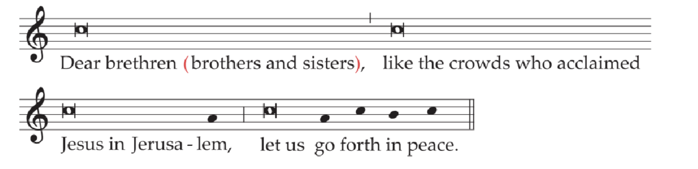
Dear brethren (brothers and sisters),
like the crowds who acclaimed Jesus in Jerusalem,
let us go forth in peace.
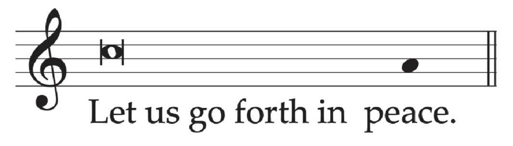
Or:
Let us go forth in peace.
In this latter case, all respond:
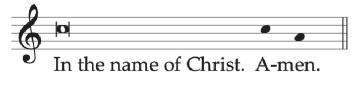
9. The Procession to the church where Mass will be celebrated then sets off in the usual way. If incense is used, the thurifer goes first, carrying a thurible with burning incense, then an acolyte or another minister, carrying a cross decorated with palm branches according to local custom, between two ministers with lighted candles. Then follow the Deacon carrying the Book of the Gospels, the Priest with the ministers, and, after them, all the faithful carrying branches.
As the Procession moves forward, the following or other suitable chants in honor of Christ the King are sung by the choir and people.
Antiphon 1
The children of the Hebrews, carrying olive branches,
went to meet the Lord, crying out and saying:
Hosanna in the highest.
If appropriate, this antiphon is repeated between the strophes of the following Psalm.
Psalm 24 (23)
The Lord's is the earth and its fullness,*
the world, and those who dwell in it.
It is he who set it on the seas;*
on the rivers he made it firm. ℟
Who shall climb the mountain of the Lord?*
Who shall stand in his holy place?
The clean of hands and pure of heart,†
whose soul is not set on vain things,*
who has not sworn so deceitful words. ℟
Blessings from the Lord shall he recieve,*
and right reward from the God who saves him.
Such are the people who seek him,*
who seek the face of the God of Jacob. ℟
O gates, lift high your heads;†
grow higher, ancient doors.*
Let him enter, the king of glory! ℟
Who is this king of glory?*
The Lord, the mighty, the valiant;†
the Lord, the valiant in war. ℟
O gates, lift high your heads;†
grow higher, ancient doors.*
Let him enter, the king of glory! ℟
Who is this king of glory?*
He, the Lord of hosts,†
he is the king of glory. ℟
Antiphon 2
The children of the Hebrews spread their garments on the road,
crying out and saying: Hosanna to the Son of David;
blessed is he who comes in the name of the Lord.
If appropriate, this antiphon is repeated between the strophes of the following Psalm.
Psalm 47 (46)
All peoples, clap your hands.*
Cry to God with shouts of joy!
For the LORD, the Most high, is awesome,*
the great king over all the earth. ℟
He humbles people under us*
and nations under our feet.
Our heritage he chose for us,*
the pride of Jacob whom he loves. ℟
God goes up with shouts of joy.*
The LORD goes up with trumpet blast.
Sing praise to God; sing praise!*
Sing praise to our king; sing praise! ℟
God is king of all earth.*
Sing praise with all your skill.
God reigns over the nations.*
God sits upon his holy throne. ℟
The princes of the peoples are assembled
with the people of the God of Abraham.*
The rulers of the earth belong to God,
who is greatly exalted. ℟
Hymn to Christ the King
Chorus: Glory and honor and praise be to you, Christ, King and Redeemer,
to whom young children cried out loving Hosannas with joy.
All repeat: Glory and honor...
Israel's King are you, King David's magnificent offspring;
you are the ruler who come blest in the name of the Lord.
All repeat: Glory and honor...
Heavenly hosts on high unite in singing your praises;
men and women on earth and all creation join in.
All repeat: Glory and honor...
Bearing branches of palm, Hebrews came crowding to greet you;
see how with prayers and hymns we come to pay you our vows.
All repeat: Glory and honor...
They offered gifts of praise to you, so near to your Passion;
see how we sing this song now to you reigning on high.
All repeat: Glory and honor...
Those you were pleased to accept; now accept our gifts of devotion,
good and merciful King, lover of all that is good.
All repeat: Glory and honor...
10. As the procession enters the church, there is sung the following responsory or another chant, which should speak of the Lord's entrance.
R. As the Lord entered the holy city, the children of the Hebrews proclaimed the resurrection of life. *Waving their branches of palm, they cried: Hosanna in the Highest.
V. When the people heard that Jesus was coming to Jerusalem, they went out to meet him. *Waving their branches.
10. When the Priest arrives at the altar, he venerates it and, if appropriate, incenses it. Then he goes to the chair, where he puts aside the cope, if he has worn one, and puts on the chasuble. Omitting the other Introductory Rites of the Mass and, if appropriate, the Kyrie (Lord, have mercy), he says the Collect of the Mass, and then continues the Mass in the usual way.
CollectSecond Form: The Solemn Entrance
12. When a procession outside the church cannot take place, the entrance of the Lord is celebrated inside the church by means of a Solemn Entrance before the principal Mass.
13. Holding branches in their hands, the faithful gather either outside, in front of the church door, or inside the church itself. The Priest and ministers and a representative group of the faithful go to a suitable place in the church outside the sanctuary, where at least the greater part of the faithful can see the rite.
14. While the Priest approaches the appointed place, the antiphon Hosanna or another appropriate chant is sung. Then the blessing of branches and the proclamation of the Gospel or the Lord's entrance into Jerusalem takes place as above. After the Gospel, the Priest processes solemnly with the ministers and the representative group of the faithful through the church to the sanctuary, while the responsory As the Lord Entered or another appropriate chant is sung.
15. Arriving at the altar, the Priest venerates it. He then goes to the chair and, omitting the Introductory Rites of the Mass and, if appropriate, the Kyrie (Lord, have mercy), he says the Collect of the Mass, and then continues the Mass in the usual way.
CollectThird Form: The Simple Entrance
18. At all other Masses of this Sunday at which the Solemn Entrance is not held, the memorial of the Lord's enrtance into Jerusalem takes place by means of a Simple Entrance.
17. While the Priest proceeds to the altar, the Entrance Antiphon with its Psalm (no. 18) or another chant on the same theme is sung. Arriving at the altar, the Priest venerates it and goes to the chair. After the Sign of the Cross, he greets the people and continues Mass in the usual way.
At other Masses, in which singing at the entrance cannot take place, the Priest, as soon as he has arrived at the altar and venerated it, greets the people, reads the Entrance Antiphon, and continues the Mass in the usual way.
18. Entrance AntiphonCf. Jn 12: 1, 12-13; Ps 24 (23): 9-10
Six days before the Passover,
when the Lord came into the city of Jerusalem,
the children ran to meet him;
in their hands they carried palm branches
and with a loud voice cried out:
*Hosanna in the Highest!
Blessed are you, who have come in your abundant mercy!
O gates, lift high your heads;
grow higher, ancient doors.
Let him enter, the king of glory!
Who is this king of glory?
He, the Lord of Hosts, he is the king of glory.
*Hosanna in the highest!
Blessed are you, who have come in your abundant mercy!
AT THE MASS
19. After the Procession or Solemn Entrance the Priest begins the Mass with the Collect.
20. Collect
Almighty ever-living God,
who as an example of humility for the human race to follow
caused our Savior to take flesh and submit to the Cross,
graciously grant that we may heed his lesson of patient suffering
and so merit a share in his Resurrection.
Who lives and reigns with you in the unity of the Holy Spirit,
God, for ever and ever.
21. The narrative of the Lord's Passion is read without candles and without incense, with no greeting or signing of the book. It is read by a Deacon or, if there is no Deacon, by a Priest. It may also be read by readers, with the part of Christ, if possible, reserved to a Priest.
Deacons, but not others, ask for the blessing of the Priest before singing the Passion, as at other times before the Gospel.
22. After the narrative of the Passion, a brief homily should take place, if appropriate. A period of silence may also be observed.
The Creed is said, and the Universal Prayer takes place.
23. Prayer over the Offerings
Through the Passion of your Only Begotten Son, O Lord,
may our reconciliation with you be near at hand,
so that, though we do not merit it by our own deeds,
yet by this sacrifice made once for all,
we may feel already the effects of your mercy.
Through Christ our Lord.
24. Preface: The Passion of the Lord
V. The Lord be with you.
R. And with your spirit.
V. Lift up your hearts.
R. We lift them up to the Lord.
V. Let us give thanks to the Lord our God.
R. It is right and just.
It is truly right and just, our duty and our salvation,
always and everywhere to give you thanks,
Lord, holy Father, almighty and eternal God,
through Christ our Lord.
For, though innocent, he suffered willingly for sinners
and accepted unjust condemnation to save the guilty.
His Death has washed away our sins,
and his Resurrection has purchased our justification.
And so, with all the Angels,
we praise you, as in joyful celebration we acclaim:
Holy, Holy, Holy Lord God of hosts...
25. Communion AntiphonMt 26: 42
Father, if this chalice cannot pass without my drinking it,
your will be done.
26. Prayer after Communion
Nourished with these sacred gifts,
we humbly beseech you, O Lord,
that, just as through the death of your Son
you have brought us to hope for what we believe,
so by his Resurrection
you may lead us to where you call.
Through Christ our Lord.
27. Prayer over the People
Look, we pray, O Lord, on this your family,
for whom our Lord Jesus Christ
did not hesitate to be delivered into the hands of the wicked
and submit to the agony of the Cross.
Who lives and reigns for ever and ever.
MONDAY OF HOLY WEEK
Entrance AntiphonCf Ps 35(34): 1-2; 140(139): 8
Contend, O Lord, with my contenders; fight those who fight me.
Take up your buckler and shield; arise in my defense, Lord, my mighty help.
Collect
Grant, we pray, almighty God,
that, though in our weakness we fail,
we may be revived through the Passion of your Only Begotten Son.
Who lives and reigns with you in the unity of the Holy Spirit,
God, for ever and ever.
Prayer over the Offerings
Look graciously, O Lord,
upon the sacred mysteries we celebrate here,
and may what you have mercifully provided
to cancel the judgment we incurred
bear for us fruit in eternal life.
Through Christ our Lord.
Preface II of the Passion of the Lord.
Communion AntiphonCf Ps 102(101): 3
Do not hide your face from me in the day of my distress.
Turn your ear towards me; on the day when I call, speedily answer me.
Prayer after Communion
Visit your people, O Lord, we pray,
and with ever-watchful love
look upon the hearts dedicated to you by means of these sacred mysteries,
so that under your protection
we may keep safe this remedy of eternal salvation,
which by your mercy we have received.
Through Christ our Lord.
Prayer over the People
May your protection, O Lord, we pray,
defend the humble,
and keep ever safe those who trust in your mercy,
that they may celebrate the paschal festivities
not only with bodily observance
but above all with purity of mind.
Through Christ our Lord.
TUESDAY OF HOLY WEEK
Entrance AntiphonCf. Ps 27(26): 12
Do not leave me to the will of my foes, O Lord,
for false witnesses rise up against me
and they breathe out violence.
Collect
Almighty, ever-living God,
grant us so to celebrate
the mysteries of the Lord’s Passion
that we may merit to receive your pardon.
Through our Lord Jesus Christ, your Son,
who lives and reigns with you in the unity of the Holy Spirit,
God, for ever and ever.
Prayer over the Offerings
Look favorably, O Lord, we pray,
on these offerings of your family,
and to those you make partakers of these sacred gifts
grant a share in their fullness.
Through Christ our Lord.
Preface II of the Passion of the Lord.
Communion AntiphonRom 8: 32
God did not spare his own Son,
but handed him over for us all.
Prayer after Communion
Nourished by your saving gifts,
we beseech your mercy, Lord,
that by the same Sacrament,
with which you have fed us in the present age
you may make us partakers of life eternal.
Through Christ our Lord.
Prayer over the People
May your mercy, O God,
cleanse the people that are subject to you
from all seduction of former ways
and make them capable of new holiness.
Through Christ our Lord.
WEDNESDAY OF HOLY WEEK
Entrance AntiphonCf Phil 2: 10, 8, 11
At the name of Jesus, every knee should bend,
of those in heaven and on the earth and under the earth,
for the Lord became obedient to death, death on a cross:
therefore Jesus Christ is Lord, to the glory of God the Father.
Collect
O God, who willed your Son to submit for our sake
to the yoke of the Cross,
so that you might drive from us the power of the enemy,
grant us, your servants, to attain the grace of the resurrection.
Through our Lord Jesus Christ, your Son,
who lives and reigns with you in the unity of the Holy Spirit,
God, for ever and ever.
Prayer over the Offerings
Receive, O Lord, we pray, the offerings made here,
and graciously grant
that celebrating your Son’s Passion in mystery,
we may experience the grace of its effects.
Through Christ our Lord.
Preface II of the Passion of the Lord.
Communion AntiphonMt 20: 28
The Son of Man did not come to be served but to serve
and to give his life as a ransom for many.
Prayer after Communion
Endow us, almighty God, with the firm conviction
that through your Son’s Death in time,
to which the revered mysteries bear witness,
we may be assured of perpetual life.
Through Christ our Lord.
Prayer over the People
Grant your faithful, O Lord, we pray,
to partake unceasingly of the paschal mysteries
and to await with longing the gifts to come,
that, persevering in the Sacraments of their rebirth,
they may be led by Lenten works to newness of life.
Through Christ our Lord.
THURSDAY OF HOLY WEEK [HOLY THURSDAY]
1. In accordance with a most ancient tradition of the Church, on this day all Masses without the people are forbidden.
The Chrism Mass
2. The blessing of the Oil of the Sick and of the Oil of Catechumens and the consecration of the Chrism are carried out by the Bishop, according to the Rite described in the Roman Pontifical, usually on this day, at a proper Mass to be celebrated during the morning.
3. If, however, it is very difficult for the clergy and the people to gather with the Bishop on this day, the Chrism Mass may be anticipated on another day, but near to Easter.
4. This Mass, which the Bishop concelebrates with his presbyterate, should be, as it were, a manifestation of the Priests' communion with their Bishop. Accordingly it is desirable that all the Priests participate in it, insofar as possible, and during it receive Communion even under both kinds. To signify the unity of the presbyterate of the Diocese, the Priests who concelebrate with the Bishop should be from different regions of the diocese.
5. In accord with traditional practice, the blessing of the Oil of the Sick takes place before the end of the Eucharistic Prayer, but the blessing of the Oil of Catechumens and the consecration of the Chrism take place after Communion. Nevertheless, for pastoral reasons, it is permitted for the entire rite of blessing to take place after the Liturgy of the Word.
6. Entrance AntiphonRev 1: 6
Jesus Christ has made us into a kingdom, priests for his God and Father.
To him be all glory and power for ever and ever. Amen.
The Gloria in excelsis (Glory to God in the highest) is said.
7. Collect
O God, who anointed your Only Begotten Son with the Holy Spirit
and made him Christ and Lord,
graciously grant
that, being made sharers in his consecration,
we may bear witness to your Redemption in the world.
Through our Lord Jesus Christ, your Son,
who lives and reigns with you in the unity of the Holy Spirit,
God, for ever and ever.
8. After the reading of the Gospel, the Bishop preaches the Homily in which, taking his starting point from the text of the readings proclaimed in the Liturgy of the Word, he speaks to the people and to his Priests about priestly anointing, urging the Priests to be faithful in their office and calling on them to renew publicly their priestly promises.
Renewal of Priestly Promises
9. After the Homily, the Bishop speaks with the Priests in these or similar words.
Beloved sons,
on the anniversary of that day
when Christ our Lord conferred his priesthood
on his Apostles and on us,
are you resolved to renew,
in the presence of your Bishop and God's holy people,
the promises you once made?
The Priests, all together, respond: I am.
Are you resolved to be more united with the Lord Jesus
and more closely conformed to him,
denying yourselves and confirming those promises
about sacred duties towards Christ's Church
which, prompted by love of him,
you willingly and joyfully pledged
on the day of your priestly ordination?
Priests: I am.
Are you resolved to be faithful stewards of the mysteries of God
in the Holy Eucharist and the other liturgical rites
and to discharge faithfully the sacred office of teaching,
following Christ the Head and Shepherd,
not seeking any gain,
but moved only by zeal for souls?
Priests: I am.
Then, turned towards the people, the Bishop continues:
As for you, dearest sons and daughters,
pray for your Priests,
that the Lord may pour out his gifts abundantly upon them,
and keep them faithful as ministers of Christ, the High Priest,
so that they may lead you to him,
who is the source of salvation.
People: Christ, hear us. Christ, graciously hear us.
And pray also for me,
that I may be faithful to the apostolic office
entrusted to me in my lowliness
and that in your midst I may be made day by day
a living and more perfect image of Christ,
the Priest, the Good Shepherd,
the Teacher and the Servant of all.
People: Christ, hear us. Christ, graciously hear us.
May the Lord keep us all in his charity
and lead all of us,
shepherds and flock,
to eternal life.
All: Amen.
10. The Creed is not said.
11. Prayer over the Offerings
May the power of this sacrifice, O Lord, we pray,
mercifully wipe away what is old in us
and increase in us grace of salvation and newness of life.
Through Christ our Lord.
12. Preface: The Priesthood of Christ and the Ministry of Priests.
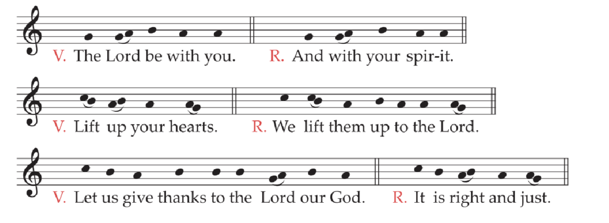
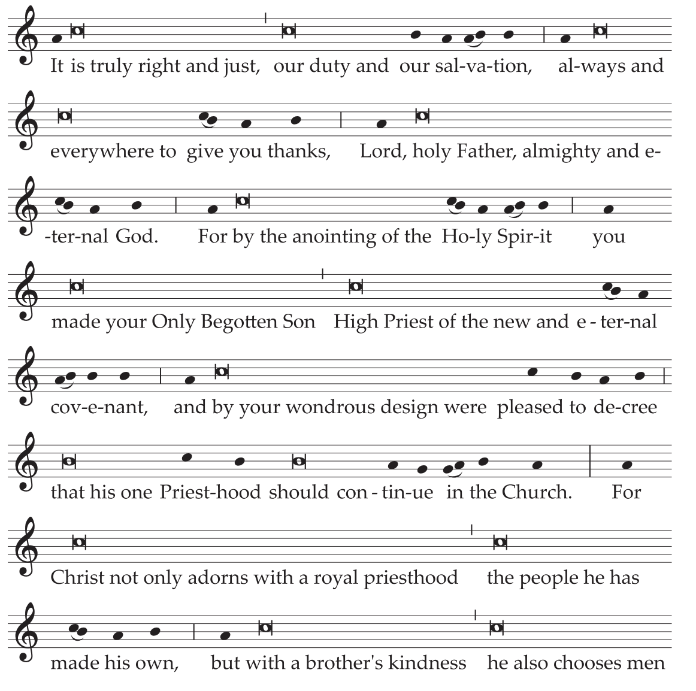
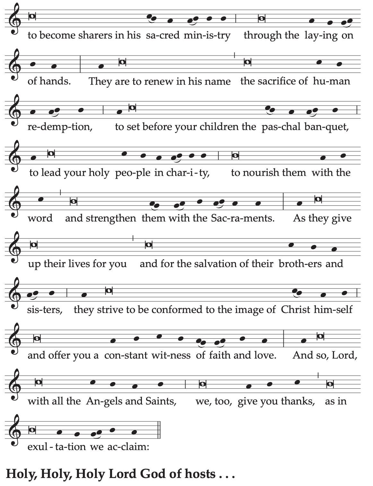
Text without music:
V. The Lord be with you.
R. And with your spirit.
V. Lift up your hearts.
R. We lift them up to the Lord.
V. Let us give thanks to the Lord our God.
R. It is right and just.
It is truly right and just, our duty and our salvation,
always and everywhere to give you thanks,
Lord, holy Father, almighty and eternal God.
For by the anointing of the Holy Spirit
you made your Only Begotten Son
High Priest of the new and eternal covenant,
and by your wondrous design were pleased to decree
that his one Priesthood should continue in the Church.
For Christ not only adorns with a royal priesthood
the people he has made his own,
but with a brother's kindness he also chooses men
to become sharers in his sacred ministry
through the laying on of hands.
They are to renew in his name
the sacrifice of human redemption,
to set before your children the paschal banquet,
to lead your holy people in charity,
to nourish them with the word
and strengthen them with the Sacraments.
As they give up their lives for you
and for the salvation of their brothers and sisters,
they strive to be conformed to the image of Christ himself
and offer you a constant witness of faith and love.
And so, Lord, with all the Angels and Saints,
we, too, give you thanks, as in exultation we acclaim:
Holy, Holy, Holy Lord God of hosts...
13. Communion AntiphonPs 89 (88): 2
I will sing for ever of your mercies, O Lord;
through all ages my mouth will proclaim your fidelity.
14. Prayer after Communion
We beseech you, almighty God,
that those you renew by your Sacraments
may merit to become the pleasing fragrance of Christ.
Who lives and reigns for ever and ever.
15. The reception of the Holy Oils may take place in individual parishes either before the celebration of the Evening Mass of the Lord's Supper or at another time that seems more appropriate.
THE SACRED PASCHAL TRIDUUM
1. In the Sacred Triduum, the Church solemnly celebrates the greatest mysteries of our redemption, keeping by means of special celebrations the memorial of her Lord, crucified, buried, and risen.
The Paschal Fast should also be kept sacred. It is to be celebrated everywhere on the Friday of the Lord's Passion and, where appropriate, prolonged also through Holy Saturday as a way of coming, with spirit uplifted, to the joys of the Lord's Resurrection.
2. For a fitting celebration of the Sacred Triduum, a sufficient number of lay ministers is required, who must be carefully instructed as to what they are to do.
The singing of the people, the ministers, and the Priest Celebrant has a special importance in the celebrations of these days, for when texts are sung, they have their proper impact.
Pastors should, therefore, not fail to explain to the Christian faithful, as best they can, the meaning and order of the celebrations and to prepare them for active and fruitful participation.
3. The celebrations of the Sacred Triduum are to be carried out in cathedral and parochial churches and only in those churches in which they can be performed with dignity, that is, with a good attendance of the faithful, an appropriate number of ministers, and the means to sing at least some of the parts.
Consequently, it is desirable that small communities, associations, and special groups of various kinds join together in churches to carry out the sacred celebrations in a more noble manner.
THURSDAY OF THE LORD'S SUPPER
At the Evening Mass
1. The Mass of the Lord's Supper is celebrated in the evening, at a convenient time, with the full participation of the whole local community and with all the Priests and ministers exercising their office.
2. All Priests may concelebrate even if they have already concelebrated the Chrism Mass on this day, or if they have to celebrate another Mass for the good of the Christian faithful.
3. Where a pastoral reason requires it, the local Ordinary may permit another Mass to be celebrated in churches and oratories in the evening and, in case of genuine necessity, even in the morning, but only for the faithful who are in no way able to participate in the evening Mass. Care should, nevertheless, be taken that celebrations of this sort do not take place for the advantage of private persons or special small groups, and do not prejudice the evening Mass.
4. Holy Communion may only be distributed to the faithful during Mass; but it may be brought to the sick at any hour of the day.
5. The altar may be decorated with flowers with a moderation that accords with the character of this day. The tabernacle should be entirely empty; but a sufficient amount of bread should be consecrated in this Mass for the Communion of the clergy and the people on this and the following day.
6. Entrance AntiphonCf. Gal 6: 14
We should glory in the Cross of our Lord Jesus Christ,
in whom is our salvation, life and resurrection,
through whom we are saved and delivered.
7. The Gloria in excelsis (Glory to God in the highest) is said. While the hymn is being sung, bells are rung, and when it is finished, they remain silent until the Gloria in excelsis of the Easter Vigil, unless, if appropriate, the Diocesan Bishop has decided otherwise. Likewise, during this same period, the organ and other musical instruments may be used only so as to support the singing.
8. Collect
O God,
who have called us to participate
in this most sacred Supper,
in which your Only Begotten Son,
when about to hand himself over to death,
entrusted to the Church a sacrifice new for all eternity,
the banquet of his love,
grant, we pray,
that we may draw from so great a mystery,
the fullness of charity and of life.
Through our Lord Jesus Christ, your Son,
who lives and reigns with you in the unity of the Holy Spirit,
God, for ever and ever.
9. After the proclamation of the Gospel, the Priest gives a homily in which light is shed on the principal mysteries that are commemorated in this Mass, namely, the institution of the Holy Eucharist and of the priestly Order, and the commandment of the Lord concerning fraternal charity.
The Washing of Feet
10. After the Homily, where a pastoral reason suggests it, the Washing of Feet follows.
11. Those who are chosen from among the people of God are led by the ministers to seats prepared in a suitable place. Then the Priest (removing his chasuble if necessary), goes to each one, and, with the help of the ministers, pours water over each one's feet and then dries them.
12. Meanwhile some of the following antiphons or other appropriate chants are sung.
Antiphon 1Cf. Jn 13: 4, 5, 15
After the Lord had risen from supper,
he poured water into a basin
and began to wash the feet of his disciples:
he left them this example.
Antiphon 2Cf. Jn 13: 12, 13, 15
The Lord Jesus, after eating supper with his disciples,
washed their feet and said to them:
Do you know what I, your Lord and Master, have done for you?
I have given you an example, that you should do likewise.
Antiphon 3Jn 13: 6, 7, 8
Lord, are you to wash my feet? Jesus said to him in answer:
If I do not wash your feet, you will have no share with me.
V. So he came to Simon Peter and Peter said to him:
–Lord.
V. What I am doing, you do not know for now,
but later you will come to know.
–Lord.
Antiphon 4Cf. Jn 13: 14
If I, your Lord and Master, have washed your feet,
how much more should you wash each other's feet?
Antiphon 5Jn 13: 35
This is how all will know that you are my disciples:
if you have love for one another.
V. Jesus said to his disciples:
–This is how.
Antiphon 6Jn 13: 34
I give you a new commandment,
that you love one another
as I have loved you, says the Lord.
Antiphon 71 Cor 13: 13
Let faith, hope and charity, these three, remain among you,
but the greatest of these is charity.
V. Now faith, hope and charity, these three, remain;
but the greatest of these is charity.
–Let.
13. After the Washing of Feet, the Priest washes and dries his hands, puts the chasuble back on, and returns to the chair, and from there he directs the Universal Prayer.
The Creed is not said.
The Liturgy of the Eucharist
14. At the beginning of the Liturgy of the Eucharist, there may be a procession of the faithful in which gifts for the poor may be presented with the bread and wine.
Meanwhile the following, or another appropriate chant, is sung.
Ant. Where true charity is dwelling, God is present there.
V. By the love of Christ we have been brought together:
V. let us find in him our gladness and our pleasure;
V. may we love him and revere him, God the living,
V. and in love respect each other with sincere hearts.
Ant. Where true charity is dwelling, God is present there.
V. So when we as one are gathered all together,
V. let us strive to keep our minds free of division;
V. may there by an end to malice, strife and quarrels,
V. and let Christ our God be dwelling here among us.
Ant. Where true charity is dwelling, God is present there.
V. May your face thus be our vision, bright in glory,
V. Christ our God, with all the blessed Saints in heaven:
V. such delight is pure and faultless, joy unbounded,
V. which endures through countless ages world without end. Amen.
15. Prayer over the Offerings
Grant us, O Lord, we pray,
that we may participate worthily in these mysteries,
for whenever the memorial of this sacrifice is celebrated
the work of our redemption is accomplished.
Through Christ our Lord.
16. Preface: The Sacrifice and the Sacrament of Christ.
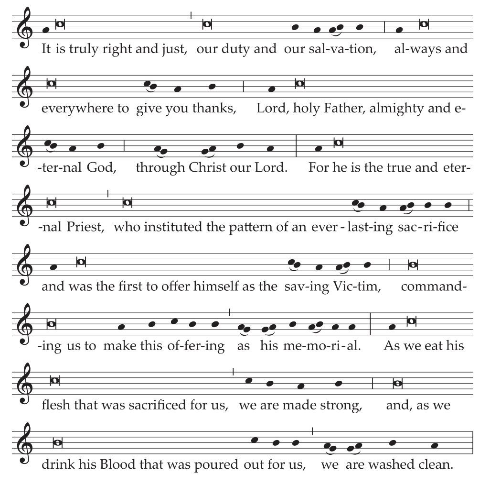
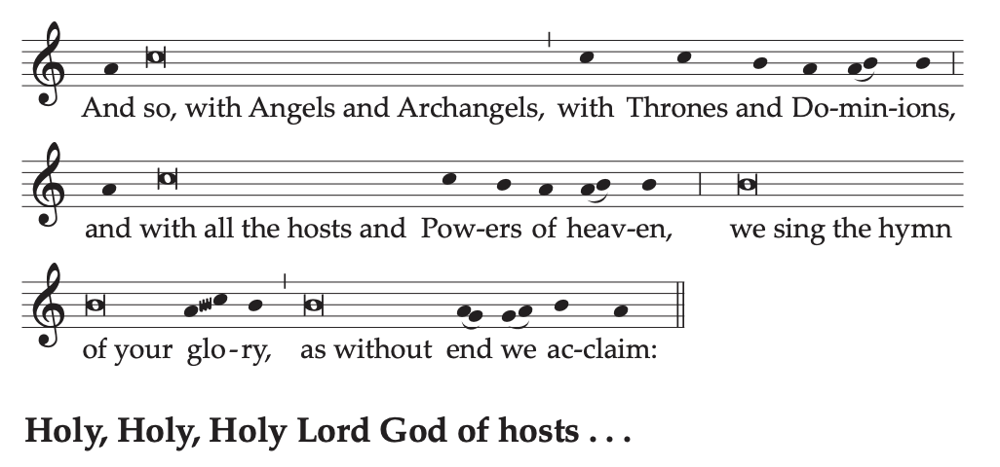
Text without music: Preface I of the Most Holy Eucharist.
17. When the Roman Canon is used, this special form of it is said, with proper formulas for the Communicantes (In communion with those), Hanc igitur (Therefore, Lord, we pray), and Qui pridie (On the day before he was to suffer).
18. The Priest, with hands extended, says:
To you, therefore, most merciful Father,Celebrant alone
we make humble prayer and petition
through Jesus Christ, your Son, our Lord:
He joins his hands and says:
that you accept
He makes the Sign of the Cross once over the bread and chalice together, saying:
and bless ✠ these gifts, these offerings,
these holy and unblemished sacrifices,
With hands extended, he continues:
which we offer you firstly
for your holy catholic Church.
Be pleased to grant her peace,
to guard, unite and govern her
throughout the whole world,
together with your servant N. our Pope
and N. our Bishop*Mention may be made here of the Coadjutor Bishop, or Auxiliary Bishops, as noted in the General Intstruction of the Roman Missal, no. 149.
and all those who, holding to the truth,
hand on the catholic and apostolic faith.
19. Commemoration of the Living.
Remember, Lord, your servants N. and N.Celebrant or one concelebrant
The Priest joins his hands and prays briefly for those for whom he intends to pray.
Then, with hands extended, he continues:
and all gathered here,
whose faith and devotion are known to you.
For them we offer you this sacrifice of praise
or they offer it for themselves
and for all who are dear to them:
for the redemption of their souls,
in hope of health and well-bring,
and paying their homage to you,
the eternal God, living and true.
20. Within the Action.
Celebrating the most sacred dayCelebrant or one concelebrant
on which our Lord Jesus Christ
was handed over for our sake,
and in communion with those whose memory we venerate,
especially the glorious ever-Virgin Mary,
Mother of our God and Lord, Jesus Christ,
and † blessed Joseph, her Spouse
and your blessed Apostles and Martyrs,
Peter and Paul, Andrew,
(James, John,
Thomas, James, Philip,
Bartholomew, Matthew, Simon and Jude;
Linus, Cletus, Clement, Sixtus,
Cornelius, Cyprian,
Lawrence, Chrysogonus,
John and Paul,
Cosmas and Damian)
and all your Saints;
we ask that through their merits and prayers,
in all things we may be defended
by your protecting help.
(Through Christ our Lord. Amen.)
21. With hands extended, the Priest continues:
Therefore, Lord, we prayCelebrant alone
graciously accept this oblation of our service,
that of your whole family,
which we make to you
as we observe the day
on which our Lord Jesus Christ
handed on the mysteries of his Body and Blood
for his disciples to celebrate;
order our days in your peace,
and command that we be delivered from eternal damnation
and counted among the flock of those you have chosen.
He joins his hands.
(Through Christ our Lord. Amen.)
22. Hold ing his hands extended over the offerings, he says:
Be pleased, O God, we pray,Celebrant with concelebrants
to bless, acknowledge,
and approve this offering in every respect;
,ake it spiritual and acceptable,
so that it may become for us
the Body and Blood of your most beloved Son,
our Lord Jesus Christ.
He joins his hands.
23. In the formulas that follow, the words of the Lord should be pronounced clearly and distinctly, as the nature of these words requires.
On the day before he was to suffer
for our salvation and the salvation of all,
that is today,
He takes the bread and, holding it slightly raised above the altar, continues:
he took bread in his holy and venerable hands,
He raises his eyes.
and with with eyes raised to heaven
to you, O God, his almighty Father,
giving you thanks, he said the blessing,
broke the bread
and gave it to his disciples, saying:
He bows slightly.
TAKE THIS, ALL OF YOU, AND EAT OF IT,
FOR THIS IS MY BODY,
WHICH WILL BE GIVEN UP FOR YOU.
He shows the consecrated host to the people, places it again on the paten, and genuflects in adoration.
24. After this, the Priest continues:
In a similar way, when supper was ended,
He takes the chalice and, holding it slightly raised above the altar, continues:
he took this precious chalice
in his holy and venerable hands,
and once more giving you thanks, he said the blessing
and gave the chalice to his disciples, saying:
He bows slightly.
TAKE THIS, ALL OF YOU, AND DRINK FROM IT,
FOR THIS IS THE CHALICE OF MY BLOOD,
THE BLOOD OF THE NEW AND ETERNAL COVENANT,
WHICH WILL BE POURED OUT FOR YOU AND FOR MANY
FOR THE FORGIVENESS OF SINS.
DO THIS IN MEMORY OF ME.
He shows the chalice to the people, places it on the corporal, and genuflects in adoration.
25. Then he says:
The mystery of faith.Celebrant alone
And the people continue, acclaiming:
We proclaim your Death, O Lord,
and profess your Resurrection
until you come again.
Or:
When we eat this Bread and drink this Cup,
we proclaim your Death, O Lord,
until you come again.
Or:
Save us, Savior of the world,
for by your Cross and Resurrection
you have set us free.
26. Then the Priest, with hands extended, says:
Therefore, O Lord,Celebrant with concelebrants
as we celebrate the memorial of the blessed Passion,
the Resurrection from the dead,
and the glorious Ascension into heaven
of Christ, your Son, our Lord,
we, your servants and your holy people,
offer to your glorious majesty
from the gifts that you have given us,
this pure victim,
this holy victim,
this spotless victim,
the holy Bread of eternal life
and the Chalice of everlasting salvation.
27. Be pleased to look upon these offerings
with a serene and kindly countenance,
and to accept them,
as once you were pleased to accept
the gifts of your servant Abel the just,
the sacrifice of Abraham, our father in faith,
and the offering of your high priest Melchizedek,
a holy sacrifice, a spotless victim.
28. Bowing, with hands joined, he continues:
In humble prayer we ask you, almighty God:
command that these gifts be borne
by the hands of your holy Angel
to your altar on high
in the sight of your divine majesty,
so that all of us, who through this participation at the altar
receive the most holy Body and Blood of your Son,
He stands upright and signs himself with the Sign of the Cross, saying:
may be filled with every grace and heavenly blessing.
He joins his hands.
(Through Christ our Lord. Amen.)
29. Commemoration of the Dead.
With hands extended, the Priest says:
Remember also, Lord, your servants N. and N.,Celebrant or one concelebrant
who have gone before us with the sign of faith
and rest in the sleep of peace.
He joins his hands and prays briefly for those who have died and those for whom he intends to pray.
Then, with hands extended, he continues:
Grant them, O Lord, we pray,
and all who sleep in Christ,
a place of refreshment, light and peace.
He joins his hands.
(Through Christ our Lord. Amen.)
30. He strikes his breast with his right hand, saying:
To us, also, your servants, who, though sinnersCelebrant or one concelebrant
And, with hands extended he continues:
hope in your abundant mercies,
graciously grant some share
and fellowship with your holy Apostles and Martyrs:
with John the Baptist, Stephen,
Matthias, Barnabas,
(Ignatius, Alexander,
Marcellinus, Peter,
Felicity, Perpetua,
Agatha, Lucy,
Agnes, Cecilia, Anastasia)
and all your Saints;
admit us, we beseech you,
into their company,
not weighing our merits,
but granting us your pardon,
He joins his hands.
through Christ our Lord.Celebrant alone
31. And he continues:
Through whom
you continue to make all these good things, O Lord;
you sanctify them, fill them with life,
bless them, and bestow them upon us.
32. He takes the chalice and the paten with the host and, elevating both, he says:
Through him, and with him, and in him,Celebrant alone or with concelebrants
O God, almighty Father,
in the unity of the Holy Spirit,
all honor and glory is yours,*This is the precise order of these words written in the version I was pulling from, though every other instance in the Missal has "glory and honor".
for ever and ever.
The people acclaim:
Amen.
Then follows the Communion Rite.
33. At an appropriate moment during Communion, the Priest entrusts the Eucharist from the table of the altar to Deacons or acolytes or other extraordinary ministers, so that afterwards it may be brought to the sick who are to receive Holy Communion at home.
34. Communion Antiphon1 Cor 11: 24-25
This is the Body that will be given up for you;
this is the Chalice of the new covenant in my Blood, says the Lord;
do this, whenever you receive it, in memory of me.
35. After the distribution of Communion, a ciborium with hosts for Communion on the following day is left on the altar. The Priest, standing at the chair, says the Prayer after Communion.
36. Prayer after Communion
Grant, almighty God,
that, just as we are renewed
by the Supper of your Son in this present age,
so we may enjoy his banquet for all eternity.
Who lives and reigns for ever and ever.
The Transfer of the Most Blessed Sacrament
37. After the Prayer after Communion, the Priest puts incense in the thurible while standing, blesses it and then, kneeling, incenses the Blessed Sacrament three times. Then, having put on a white humeral veil, he rises, takes the ciborium, and covers it with the ends of the veil.
38. A procession is formed in which the Blessed Sacrament, accompanied by torches and incense, is carried through the church to a place of repose prepared in a part of the church or in a chapel suitably decorated. A lay minister with a cross, standing between two other ministers with lighted candles leads off. Others carrying lighted candles follow. Before the Priest carrying the Blessed Sacrament comes the thurifer with a smoking thurible. Meanwhile, the hymn Pange, lingua (exclusive of the last two stanzas) or another eucharistic chant is sung.
39. When the procession reaches the place of repose, the Priest, with the help of the Deacon if necessary, places the ciborium in the tabernacle, the door of which remains open. Then he puts incense in the thurible and, kneeling, incenses the Blessed Sacrament, while Tantum ergo Sacramentum or another eucharistic chant is sung. Then the Deacon or the Priest himself places the Sacrament in the tabernacle and closes the door.
40. After a period of adoration in silence, the Priest and ministers genuflect and return to the sacristy.
41. At an appropriate time, the altar is stripped and, if possible, the crosses are removed reom the church. It is expedient that any crosses which remain in the church be veiled.
42. Vespers (Evening Prayer) is not celebrated by those who have attended the Mass of the Lord's Supper.
43. The faithful are invited to continue adoration before the Blessed Sacrament for a suitable length of time during the night, according to local circumstances, but after midnight the adoration should take place without solemnity.
44. If the celebration of the Passion of the Lord on the following Friday does not take place in the same church, the Mass is concluded in the usual way and the Blessed Sacrament it placed in the tabernacle.
FRIDAY OF THE PASSION OF THE LORD [GOOD FRIDAY]
1. On this and the following day, by a most ancient tradition, the Church does not celebrate the Sacraments at all, except for Penance and the Anointing of the Sick.
2. On this day, Holy Communion is distributed to the faithful only within the celebration of the Lord's Passion; but it may be brought at any hour of the day to the sick who cannot participate in this celebration.
3. The altar should be completely bare: without a cross, without candles and without cloths.
The Celebration of the Passion of the Lord
4. On the afternoon of this day, about three o'clock (unless a later hour is chosen for a pastoral reason), there takes place the celebration of the Lord's Passion consisting in three parts, namely, the Liturgy of the Word, the Adoration of the Cross, and Holy Communion.
In the United States, if the size or nature of a parish or other community indicates the pastoral need for an additional liturgical service, the Diocesan Bishop may permit the service to be repeated later. This liturgy by its very nature may not, however, be celebrated in the absence of a Priest.
5. Then the Priest and the Deacon, if a Deacon is present, wearing red vestments as for Mass, go to the altar in silence and, after making a reverence to the altar, prostrate themselves or, if appropriate, kneel and pray in silence for a while. All others kneel.
6. Then the Priest, with the ministers, goes to the chair where, facing the people, who are standing, he says, with hands extended, one of the following prayers, omitting the invitation Let us pray.
Prayer
Remember your mercies, O Lord,
and with your eternal protection sanctify your servants,
for whom Christ your Son,
by the shedding of his Blood,
established the Paschal Mystery.
Who lives and reigns for ever and ever.
R. Amen.
Or:
O God, who by the Passion of Christ your Son, our Lord,
abolished the death inherited from ancient sin
by every succeeding generation,
grant that just as, being conformed to him,
we have borne by the law of nature
the image of the man of earth,
so by the sanctification of grace
we may bear the image of the Man of heaven.
Through Christ our Lord.
R. Amen.
7. Then all sit and the First Reading, from the Book of the Prophet Isaiah (52: 13-53: 12), is read with its Psalm.
8. The Second Reading, from the Letter to the Hebrews (4: 14-16; 5: 7-9), follows, and then the chant before the Gospel.
9. Then the narrative of the Lord's Passion according to John (18: 1–19: 42) is read in the same was as on the preceding Sunday.
10. After the reading of the Lord's Passion, the Priest gives a brief homily and, at its end, the faithful may be invited to spend a short time in prayer.
The Solemn Intercessions
11. The Liturgy of the Word concludes with the Solemn Intercessions, which take place in this way: the Deacon, if a Deacon is present, or if he is not, a lay minister, stands at the ambo, and sings or says the invitation in which the intention is expressed. Then all pray in silence for a while, and afterwards the Priest, standing at the chair or, if appropriate, at the altar, with hands extended, sings or says the prayer.
The faithful may remain either kneeling or standing throughout the entire period of the prayers.
12. Before the Priest's prayer, in accord with tradition, it is permissible to use the Deacon's invitations Let us kneel–Let us stand, with all kneeling for silent prayer.
Text with music:
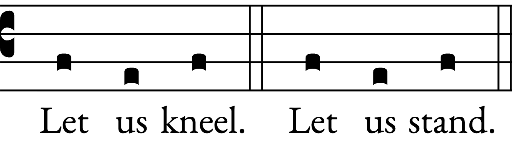
The Conferences of Bishops may provide other invitations to introduce the prayer of the Priest.
13. In a situation of grave public need, the Diocesan Bishop may permit or order the addition of a special intention.
I. For Holy Church
The prayer is sung in the simple tone or, if the invitations Let us kneel–Let us stand are used, in the solemn tone.
Let us pray, dearly beloved, for the holy Church of God,
that our God and Lord be pleased to give her peace,
to guard her and to unite her throughout the whole world
and grant that, leading our life in tranquility and quiet,
we may glorify God the Father almighty.
Prayer in silence. Then the Priest says:
Almighty ever-living God,
who in Christ revealed your glory to all the nations,
watch over the works of your mercy,
that your Church, spread throughout the world,
may persevere with steadfast faith in confessing your name.
Through Christ our Lord.
R. Amen.
II. For the Pope
Let us pray also for our most Holy Father Pope N.,
that our God and Lord,
who chose him for the Order of Bishops,
may keep him safe and unharmed for the Lord's holy Church,
to govern the holy People of God.
Prayer in silence. Then the Priest says:
Almighty ever-living God,
by whose decree all things are founded,
look with favor on our prayers
and in your kindness protect the Pope chosen for us,
that, under him, the Christian people,
governed by you their maker,
may grow in merit by reason of their faith.
Through Christ our Lord.
R. Amen.
III. For all orders and degrees of the faithful
Let us pray also for our Bishop N.,*Mention may be made here of the Coadjutor Bishop, or Auxiliary Bishops, as noted in the General Intstruction of the Roman Missal, no. 149.
for all Bishops, Priests, and Deacons of the Church
and for the whole of the faithful people.
Prayer in silence. Then the Priest says:
Almighty ever-living God,
by whose Spirit the whole body of the Church
is sanctified and governed,
hear our humble prayer for your ministers,
that, by the gift of your grace,
all may serve you faithfully.
Through Christ our Lord.
R. Amen.
IV. For catechumens
Let us pray also for (our) catechumens,
that our God and Lord
may open wide the ears of their inmost hearts
and unlock the gates of his mercy,
that, having received forgiveness of all their sins
through the waters of rebirth,
they, too, may be one with Christ Jesus our Lord.\
Prayer in silence. Then the Priest says:
Almighty ever-living God,
who make your Church ever fruitful with new offspring,
increase the faith and understanding of (our) catechumens,
that, reborn in the font of Baptism,
they may be added to the number of your adopted children.
Through Christ our Lord.
R. Amen.
V. For the unity of Christians
Let us pray also for all our brothers and sisters who believe in Christ,
that our God and Lord may be pleased,
as they live the truth,
to gather them together and keep them in his one Church.
Prayer in silence. Then the Priest says:
Almighty ever-living God,
who gather what is scattered
and keep together what you have gathered,
look kindly on the flock of your Son,
that those whom one Baptism has consecrated
may be joined together by integrity of faith
and united in the bond of charity.
Through Christ our Lord.
R. Amen.
VI. For the Jewish People
Let us pray also for the Jewish people,
to whom the Lord our God spoke first,
that he may grant them to advance in love of his name,
and in faithfulness to his covenant.
Prayer in silence. Then the Priest says:
Almighty ever-living God,
who bestowed your promises on Abraham and his descendants,
graciously hear the prayers of your Church,
that the people you first made your own
may attain the fullness of redemption.
Through Christ our Lord.
R. Amen.
VII. For those who do not believe in Christ
Let us pray also for those who do not believe in Christ,
that, enlightened by the Holy Spirit,
they, too, may enter on the way of salvation.
Prayer in silence. Then the Priest says:
Almighty ever-living God,
grant to those who do not confess Christ
that, by walking before you with a sincere heart,
they may find the truth
and that we ourselves, being constant in mutual love
and striving to understand more fully the mystery of your life,
may be made more perfect witnesses to your love in the world.
Through Christ our Lord.
R. Amen.
VIII. For those who do not believe in God
Let us pray also for those who do not acknowledge God,
that, following what is right in sincerity of heart,
they may find the way to God himself.
Prayer in silence. Then the Priest says:
Almighty ever-living God,
who created all people
to seek you always by desiring you
and, by finding you, come to rest,
grant, we pray,
that, despite every harmful obstacle,
all may recognize the signs of your fatherly love
and the witness of the good works
done by those who believe in you,
and so in gladness confess you,
the one true God and Father of our human race.
Through Christ our Lord.
R. Amen.
IX. For those in public office
Let us pray also for those in public office,
that our God and Lord
may direct their minds and hearts according to his will
for the true peace and freedom of all.
Prayer in silence. Then the Priest says:
Almighty ever-living God,
in whose hand lies every human heart
and the rights of peoples,
look with favor, we pray,
on those who govern with authority over us,
that throughout the whole world,
the prosperity of peoples,
the assurance of peace,
and freedom of religion
may through your gift be made secure.
Through Christ our Lord.
R. Amen.
X. For those in tribulation
Let us pray, dearly beloved,
to God the Father almighty,
that he may cleanse the world of all errors,
banish disease, drive out hunger,
unlock prisons, loosen fetters,
granting to travelers safety, to pilgrims return,
health to the sick, and salvation to the dying.
Prayer in silence. Then the Priest says:
Almighty ever-living God,
comfort of mourners, strength of all who toil,
may the prayers of those who cry out in any tribulation
come before you,
that all may rejoice,
because in their hour of need
your mercy was at hand.
Through Christ our Lord.
R. Amen.
14. After the Solemn Intercessions, the solemn Adoration of the Holy Cross takes place. Of the two forms of the showing of the Cross presented here, the more appropriate one, according to pastoral needs, should be chosen.
The Showing of the Holy Cross
First FormSee Second Form
15. The Deacon accompanied by ministers, or another suitable minister, goes to the sacristy, from which, in procession, accompanied by two ministers with lighted candles, he carries the Cross, covered with a violet veil, through the church to the middle of the sanctuary.
The Priest, standing before the altar and facing the people, receives the Cross, uncovers a little of its upper part and elevates it while beginning the Ecce lignum Crucis (Behold the wood of the Cross). He is assisted in singing by the Deacon or, if need be, by the choir. All respond, Come, let us adore. At the end of the singing, all kneel and for a brief moment adore in silence, while the Priest stands and holds the Cross raised.
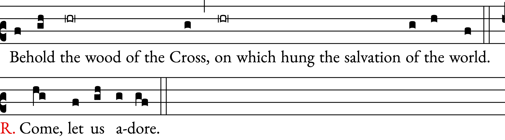
Or:
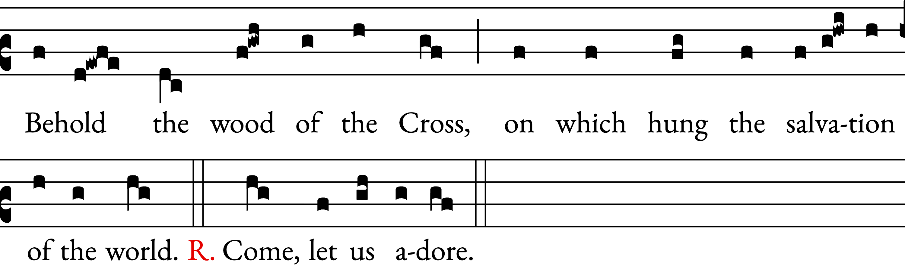
Or:
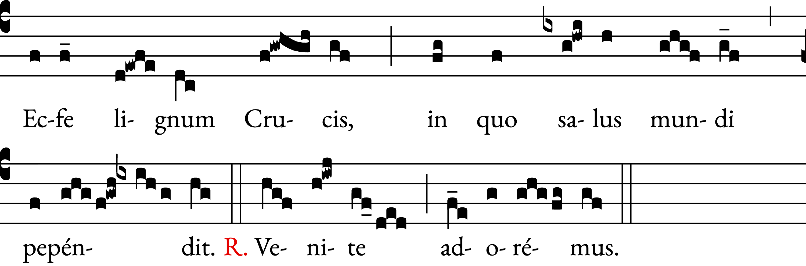
Behold the wood of the Cross,
on which hung the salvation of the world.
R. Come, let us adore.
Then the Priest uncovers the right arm of the Cross and again, raising up the Cross, begins, Behold the wood of the Cross and everything takes place as above.
Finally, he uncovers the Cross entirely and, raising it up, he begins the invitation Behold the wood of the Cross a third time and everything takes place as above.
Second Form
16. The Priest or the Deacon accompanied by ministers, or another suitable minister, goes to the door of the church, where he receives the unveiled Cross, and the ministers take lighted candles; then the procession sets off through the church to the sanctuary. Near the door, in the middle of the church and before the entrance of the sanctuary, the one who carries the Cross elevates it, singing, Behold the wood of the Cross, to which all respond, Come, let us adore. After each response all kneel and for a brief moment adore in silence, as above.
The Adoration of the Holy Cross
17. Then, accompanied by two ministers with lighted candles, the Priest or the Deacon carries the Cross to the entrance of the sanctuary or to another suitable place and there puts it down or hands it over to the ministers to hold. Candles are placed on the right and left sides of the Cross.
18. For the Adoration of the Cross, first the Priest Celebrant alone approaches, with the chasuble and his shoes removed, if appropriate. Then the clergy, the lay ministers, and the faithful approach, moving as if in procession, and showing reverence to the Cross by a simple genuflection or by some other sign appropriate to the usage of the region, for example, by kissing the Cross.
19. Only one Cross should be offered for adoration. If, because of the large number of people, it is not possible for all to approach individually, the Priest, after some of the clergy and faithful have adored, takes the Cross and, standing in the middle before the altar, invites the people in a few words to adore the Holy Cross and afterwards holds the Cross elevated higher for a brief time, for the faithful to adore it in silence.
20. While the adoration of the Holy Cross is taking place, the antiphon Crucem tuam adoramus (We adore your Cross, O Lord), the Reproaches, the hymn Crux fidelis (Faithful Cross) or other suitable chants are sung, during which all who have already adored the Cross remain seated.
Skip to Reproaches Skip to Hymn
Ant. We adore your Cross, O Lord,
we praise and glorify your holy Resurrection,
for behold, because of the wood of a tree
joy has come to the whole world.
May God have mercy on us and bless us;Cf. Ps 67 (66): 2
may he let his face shed its light upon us
and have mercy on us.
And then the antiphon is repeated: We adore . . .
Parts assigned to one of the two choirs separately are indicated by the numbers 1 (first choir) and 2 (second choir); parts sung by both choirs together are marked: 1 and 2. Some of the verses may also be sung by two cantors.
I
1 and 2 My people, what have I done to you?
Or how have I grieved you? Answer me!
1 Because I led you out of the land of Egypt,
you have prepared a Cross for your Savior.
1 Hagios o Theos,
2 Holy is God,
1 Hagios Ischyros,
2 Holy and Mighty,
1 Hagios Athanatos, eleison himas.
2 Holy and Immortal One, have mercy on us.
1 and 2 Because I led you out through the desert forty years
and fed you with manna and brought you into a land of plenty,
you have prepared a Cross for your Savior.
1 Hagios o Theos,
2 Holy is God,
1 Hagios Ischyros,
2 Holy and Mighty,
1 Hagios Athanatos, eleison himas.
2 Holy and Immortal One, have mercy on us.
1 and 2 What more should I have done for you and have not done?
Indeed, I planted you as my most beautiful chosen vine
and you have turned very bitter for me,
for in my thirst you gave me vinegar to drink
and with a lance you pierced you Savior's side.
1 Hagios o Theos,
2 Holy is God,
1 Hagios Ischyros,
2 Holy and Mighty,
1 Hagios Athanatos, eleison himas.
2 Holy and Immortal One, have mercy on us.
II
Cantors:
I scourged Egypt for your sake with its firstborn sons,
and you scourged me and handed me over.
1 and 2 repeat:
My people, what have I done to you?
Or how have I grieved you? Answer me!
Cantors:
I led you out from Egypt as Pharoah lay sunk in the Red Sea,
and you handed me over to the chief priests.
1 and 2 repeat:
My people, what have I done to you?
Or how have I grieved you? Answer me!
Cantors:
I opened up the sea before you,
and you opened my side with a lance.
1 and 2 repeat:
My people, what have I done to you?
Or how have I grieved you? Answer me!
Cantors:
I went before you in a pillar of cloud,
and you led me into Pilate's palace.
1 and 2 repeat:
My people, what have I done to you?
Or how have I grieved you? Answer me!
Cantors:
I fed you with manna in the desert,
and on me you rained blows and lashes.
1 and 2 repeat:
My people, what have I done to you?
Or how have I grieved you? Answer me!
Cantors:
I gave you saving water from the rock to drink,
and for drink you gave me gall and vinegar.
1 and 2 repeat:
My people, what have I done to you?
Or how have I grieved you? Answer me!
Cantors:
I struck down for you the kings of the Canaanites,
and you struck my head with a reed.
1 and 2 repeat:
My people, what have I done to you?
Or how have I grieved you? Answer me!
Cantors:
I put in your hand a royal scepter,
and you put on my head a crown of thorns.
1 and 2 repeat:
My people, what have I done to you?
Or how have I grieved you? Answer me!
Cantors:
I exalted you with great power,
and you hung me on the scaffold of the Cross.
1 and 2 repeat:
My people, what have I done to you?
Or how have I grieved you? Answer me!
All:
Faithful Cross the Saints rely on,
Noble tree beyond compare!
Never was there such a scion,
Never leaf or flower so rare.
Sweet the timber, sweet the iron,
Sweet the burden that they bear!
Cantors:
Sing, my tongue, in exultation
Of our banner and device!
Make a solemn proclamation
Of a triumph and its price:
How the Savior of creation
Conquered by his sacrifice!
All:
Faithful Cross the Saints rely on,
Noble tree beyond compare!
Never was there such a scion,
Never leaf or flower so rare.
Cantors:
For, when Adam first offended,
Eating that forbidden fruit,
Not all hopes of glory ended
With the serpent at the root:
Broken nature would be mended
By a second tree and shoot.
All:
Sweet the timber, sweet the iron,
Sweet the burden that they bear!
Cantors:
Thus the tempter was outwitted
By a wisdom deeper still:
Remedy and ailment fitted,
Means to cure and means to kill;
That the world might be acquitted,
Christ would do his Father's will.
All:
Faithful Cross the Saints rely on,
Noble tree beyond compare!
Never was there such a scion,
Never leaf or flower so rare.
Cantors:
So the Father, out of pity
For our self-inc=flicted doom,
Sent him from the heavenly city
When the holy time had come:
He, the Son and the Almighty,
Took our flesh in Mary's womb.
All:
Sweet the timber, sweet the iron,
Sweet the burden that they bear!
Cantors:
Hear a tiny baby crying,
Founder of the seas and strands;
See his virgin Mother tying
Cloth around his feet and hands;
Find him in a manger lying
Tightly wrapped in swaddling-bands!
All:
Faithful Cross the Saints rely on,
Noble tree beyond compare!
Never was there such a scion,
Never leaf or flower so rare.
Cantors:
So he came, the long-expected,
Not in glory, not to reign;
Only born to be rejected,
Choosing hunger, toil and pain,
Till the scaffold was erected
And the Paschal Lamb was slain.
All:
Sweet the timber, sweet the iron,
Sweet the burden that they bear!
Cantors:
No disgrace was too abhorrent:
Nailed and mocked and parched he died;
Blood and water, double warrant,
Issue from his wounded side,
Washing in a mighty torrent
Earth and stars and oceantide.
All:
Faithful Cross the Saints rely on,
Noble tree beyond compare!
Never was there such a scion,
Never leaf or flower so rare.
Cantors:
Lofty timber, smooth your roughness,
Flex your boughs for blossoming;
Let your fibers lose their toughness,
Gently let your tendrils cling;
Lay aside your native gruffness,
Clasp the body of your King!
All:
Sweet the timber, sweet the iron,
Sweet the burden that they bear!
Cantors:
Noblest tree of all created,
Richly jeweled and embossed:
Post by Lamb's blood consecrated;
Spar that saves the tempest-tossed;
Scaffold-beam which, elevated,
Carries what the world has cost!
All:
Faithful Cross the Saints rely on,
Noble tree beyond compare!
Never was there such a scion,
Never leaf or flower so rare.
The following conclusion is never to be omitted:
All:
Wisdom, power, and adoration
To the blessed Trinity
For redemption and salvation
Through the Paschal Mystery,
Now, in every generation,
And for all eternity. Amen.
In accordance with local circumstances or popular traditions and if it is pastorally appropriate, the Sabat Mater may be sung, as found in the Graduale Romanum, or another suitable chant in memory of the compassion of the Blessed Virgin Mary.
21. When the adoration has been concluded, the Cross is carried by the Deacon or a minister to its place at the altar. Lighted candles are placed around or on the altar or near the Cross.
22. A cloth is spread on the altar, and a corporal and the Missal put in place. Meanwhile the Deacon or, if there is no Deacon, the Priest himself, putting on a humeral veil, brings the Blessed Sacrament back from the place of repose to the altar by a shorter route, while all stand in silence. Two ministers with lighted candles accompany the Blessed Sacrament and place their candlesticks around or upon the altar.
When the Deacon, if a Deacon is present, has placed the Blessed Sacrament upon the altar and uncovered the ciborium, the Priest goes to the altar and genuflects.
23. Then the Priest, with hands joined, says aloud:
At the Savior's command
and formed by divine teaching,
we dare to say:
The Priest, with hands extended says, and all present continue:
Our Father, who art in heaven,
hallowed be thy name;
thy kingdom come,
thy will be done
on earth as it is in heaven.
Give us this day our daily bread,
and forgive us our trespasses,
as we forgive those who trespass against us;
and lead us not into temptation,
but deliver us from evil.
24. With hands extended, the Priest continues alone:
Deliver us, Lord, we pray, from every evil,
graciously grant peace in our days,
that, by the help of your mercy,
we may be always free from sin
and safe from all distress,
as we await the blessed hope
and the coming of our Savior, Jesus Christ.
He joins his hands.
The people conclude the prayer, proclaiming:
For the kingdom, the power and the glory are yours now and for ever.
25. Then the Priest, with hands joined, says quietly:
May the receiving of your Body and Blood,
Lord Jesus Christ,
not bring me to judgement and condemnation,
but through your loving mercy
be for me protection in mind and body
and a healing remedy.
26. The Priest then genuflects, takes a particle, and, holding it slightly raised over the ciborium, while facing the people, says aloud:
Behold the Lamb of God,
behold him who takes away the sins of the world.
Blessed are those called to the supper of the Lamb.
And together with the people he adds once:
Lord, I am not worthy
that you should enter under my roof,
but only say the word
and my soul shall be healed.
27. And facing the altar, he reverently consumes the Body of Christ, saying quietly: May the Body of Christ keep me safe for eternal life.
28. He then proceeds to distribute Communion to the faithful. During Communion, Psalm 22 (21) or another appropriate chant may be sung.
29. When the distribution of Communion has been completed, the ciborium is taken by the Deacon or another suitable minister to a place prepared outside the church or, if circumstances so require, it is placed in the tabernacle.
30. Then the Priest says: Let us pray, and, after a period of sacred silence, if circumstances so suggest, has been observed, he says the Prayer after Communion.
Almighty ever-living God,
who have restored us to life
by the blessed Death and Resurrection of your Christ,
preserve in us the work of your mercy,
that, by partaking of this mystery,
we may have a life unceasingly devoted to you.
Through Christ our Lord.
R. Amen.
31. For the Dismissal the Deacon or, if there is no Deacon, the Priest himself, may say the invitation Bow down for the blessing.
Then the Priest, standing facing the people and extending his hands over them, says this Prayer over the People:
May abundant blessing, O Lord, we pray,
descend upon your people,
who have honored the Death of your Son
in the hope of their resurrection:
may pardon come,
comfort be given,
holy faith increase,
and everlasting redemption be made secure.
Through Christ our Lord.
R. Amen.
32. And all, after genuflecting to the Cross, depart in silence.
33. After the celebration, the altar is stripped, but the Cross remains on the altar with two or four candlesticks.
34. Vespers (Evening Prayer) is not celebrated by those who have been present at the solemn afternoon liturgical celebration.
HOLY SATURDAY
1. On Holy Saturday the Church waits at the Lord's tomb in prayer and fasting, meditating on his Passion and Death and on his Descent into Hell, and awaiting his Resurrection.
2. The Church abstains from the Sacrifice of the Mass, with the sacred table left bare, until after the solemn Vigil, that is, the anticipation by night of the Resurrection, when the time comes for paschal joys, the abundance of which overflows to occupy fifty days.
3. Holy Communion may only be given on this day as Viaticum.